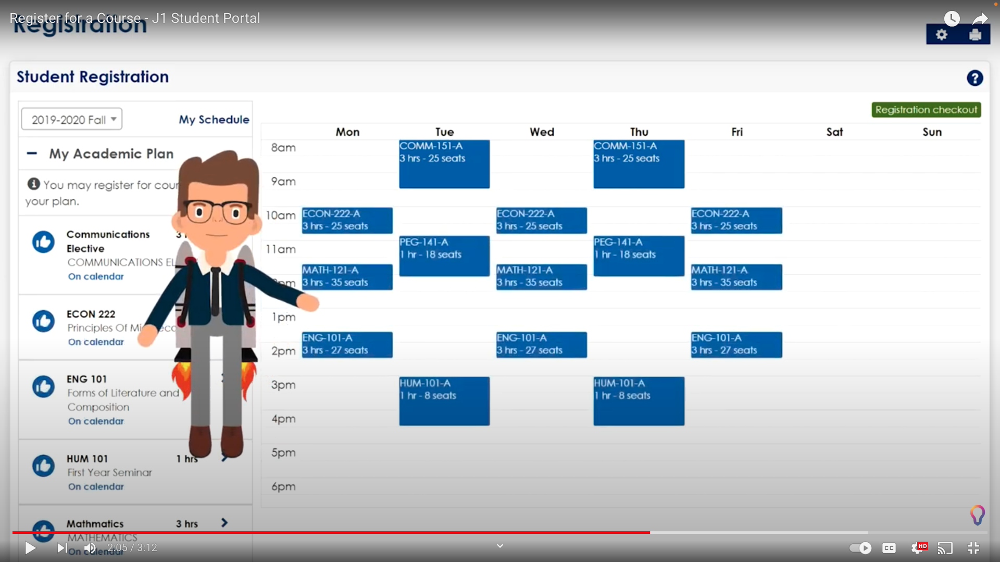

Athena is the University of Georgia’s student information system (SIS) and houses key functions, including registration for classes. However, the Athena course registration process is unclear and overwhelming, especially for first-time users. Course registration is central to a student’s experience and success because it determines the entire makeup of their semester. Furthermore, registration is an extremely time sensitive process. Many students compete for a limited set of spots in a course, which means there is a strong need for this process to be as seamless as possible. Athena registration relates to the project theme of “educational technology” (EdTech) in “computing education” at institutes of higher learning. The registration takes place on the Internet and enables students to access computing education (i.e. computer science courses), so while Athena registration is not used in the classroom, it is a technological tool that is key to unlocking computing education. The crux of the issue with Athena registration is two-fold. First, there is too much cluttered information displayed at once, which reduces the effectiveness of signifiers and makes it difficult to find critical course information. Second, there are a series of unclear signifiers that fail to communicate the appropriate affordances, and sometimes even communicate an anti-affordance.
We define a typical interaction (i.e. typical registration flow) based on the UGA Office of Registrar’s written instructions and step-by-step video for how to register for classes. Their written instructions are as follows: Meet with Your Advisor, Check Course Authorization, Check Course Prerequisites, Check for Holds, Check to see when your appointment or ticket time will be available, and Access Athena and begin registration (“Enrollment & Registration”). Essentially, we can understand the registration process by splitting it up into two parts: pre-registration planning and registration. In the planning steps, students figure out what classes to take (e.g. CSCI 4800) and what the authorizations are. To do so, the instructions refer students to the UGA Bulletin, Degreeworks, and Schedule of Classes, not Athena (“Enrollment & Registration”). Also, there is nothing describing what a CRN is and nothing indicating that users should register through a CRN.
When it is time to register, the written instructions tell students to navigate to Athena. The Office of Registrar’s step-by-step video called “Register for Classes” demonstrates three ways to register: searching for classes, entering CRNs, and uploading classes from the pre-developed plan. Searching is the first method described, and it is the focus for the majority of the video. Also, it is the only pathway that requires no outside information or preparation. The “Register for Classes” video does not describe what a CRN is and does not tell users where to search for them. The video creators have assumed that students know what a CRN is and already have their CRNs ready to enter into Athena. Similarly, the video creators assume that students watching the video already know what a plan is and how to create one (“Register for Classes”). While there is a separate Office of Registrar video posted online called “Plan Ahead,” it is not mentioned in the written instructions “Enrollment & Registration”. Plus, when new students register at orientation, the planning phase consists of a meeting with their advisor and then soon afterwards, they jump straight into registering, skipping the need for “Plan Ahead” functionality for newly enrolled students.
In addition to “Plan Ahead,” the Office of Registrar has another video called “Prepare for Registration.” The video title, “Prepare for Registration,” signifies that the video covers all the pre-registration steps. That is not the case. Instead, it only tells students how to check for registration holds. A student might erroneously assume that this is the beginning and end of preparation for Athena for the upcoming semester, when in fact, the “Plan Ahead” functionality is also a critical way to prepare for registration. Also, there is no video that clearly defines what a CRN is (“Plan Ahead”; “Prepare for Registration”; “Register for Classes”). The videos just use CRN in context, which does cumulatively (i.e., after watching multiple videos online) communicate some meaning through context clues, but it is imperfect. Finally, the only registration step that does not require prior knowledge and preparation and lines up with the written instructions is searching for classes.
Ultimately, we will be focusing on students with little experience with Athena, so we will use browsing as our typical interaction:
Seven Stages of Action:
The registration page consists of three sections: search for class section, summary list-view of all classes, and a calendar-like view of all the classes registered for. In the search section, there is a form that affords inputting values for fields and affords submitting a form. After form submission, students are presented a table with 14 columns, and the content for typically 5 of the columns are cut off or truncated. There is no signifier that indicates these cells can afford cursor hovering to see the remainder of the text. Also, in the course title column, the text is underlined, which signifies that the text affords clicking. Clicking opens up a dialog box containing neatly formatted course enrollment information such as course description, CRN, meeting times, etc., many of which were fields that were cut off on the main table. While the time to learn with hovering is expected to be small, and while neatly formatted information is available in a separate dialog box, hovering over every cell or opening a new dialog box for every available class option is cumbersome and time consuming. Also, the table column header affords column resizing by dragging the headers in and out, as signified by change in cursor shape when hovering over the table outline, but column expansions come at the expense of being able to see other fields without scrolling horizontally.
When browsing for courses, there is a gray button in the rightmost column with the text “Add,” which to the student, signifies that the button affords clicking and adding a class to the student’s schedule. However, the actual signifier to affordance mapping is different. Clicking the Add button affords adding a class to the Course Summary window, which is an intermediate step to review course changes before clicking Submit. This misunderstanding results from a lack of user experience and context. It is hard to know what affordances associated with the Add button are until the student has interacted with the system enough to uncover the true mapping. Over time, ideally, students will see that when clicking Add, a new entry for the course appears in the schedule calendar tab and in the summary window with a status of Pending. However, this might not be the case. When using split screen on a laptop or using a mobile device/tablet, only one of the bottom two screens can be open at once: Schedule or Summary. If the Summary window is not open, then a student will never see that clicking Add adds the class to the Summary window, but they will see the course appear in their calendar or list view of Schedule. In other words, the signifier (adding newly Added course to summary) is never visible. There would be no way for a user to know that there are additional steps to take to save registration changes.
Let’s assume that the student is able to see and understand the true function of clicking Add. Within the Summary window, the unclear signifiers add an additional layer of confusion. Specifically, there is a column called “Status” which contains unclear signifiers. When adding a course to the Summary, the class appears with a “Pending” status. There are no additional signifiers that indicate what a status affords, wasting time for new users that are trying to understand what each type of status means. For some students, “Pending” can signify that the class registration is taking place currently or that the system is lagging or slow. The user might assume that there are no additional actions needed on their side to successfully register for a class. Other users might be skeptical and even feel that the process is incomplete, and they will look at surrounding information to better understand what “Pending” means. When adding a course to the Summary window, even though it says “Pending,” the next column over will display “**Web Registered**,” which signifies that the registration process is completed. In addition to populating in the Summary window, clicking Add will also populate the course to the calendar section. This can also incorrectly communicate that the class has been successfully added and the process is complete. Finally, Athena’s Summary window contains an action column signified by the word Action. This Action column along with a dropdown button signifies clicking of the button as well as viewing of options. There are multiple options which a user can view depending on the date. If the user is registering during the university’s registration period, the system affords Web Registering, Removing, Waitlisting, or None. The user is signified by all of these options. The Waitlist option may be self explanatory, but Athena does not appear to have any additional signifiers explaining the effects of choosing these particular options (i.e. what does Web Registered mean? What does None mean?). The correct use of the system is to understand that the button in the Summary window labeled Submit (signifier) affords clicking and saving registration selections, but in the context of other signifiers, the true affordance may be unknown. If a user closes the window or navigates away from the page, then their registration changes have not been saved.
The user population for our problem is all types of students at UGA including undergraduate, graduate, and professional students. Advisors also access Athena to teach students, but they do not register for classes.
The students all use Athena to register for classes. They must see if the classes they want are available, add them to their summary page, and register for their selected classes.
Advisors can help guide students through Athena, so they do not necessarily have to go through the entire registration process like a student would.
With an improved solution, users could get a user experience which gives the user a better experience. Using this solution would hopefully leave students feeling more satisfied instead of stressed as some have felt stressed when using Athena (Fitzgerald, 2021). There would be less confusion from the affordances and signifiers, and without the information overload, users would not have to remember and store as much information in their heads. With less confusion, the user could also be more efficient, productive, and more likely to register for the class that they had planned for. In the end, students would have successfully registered for their classes and could be looking forward to their next semester.
Athena is a personalized implementation for UGA of Ellucian Banner, but one of the biggest competitors to Ellucian is Jenzabar. Jenzabar One is another form of SIS used widely among colleges. They provide an all-in-one solution for university students, which significantly decreases the confusion and tedious process of registration, mostly stemming from looking up classes and adding to the summary view of Athena registration page.
Jenzabar recently upgraded their platform with “new personalized course planning and scheduling capabilities, added granular grade information, and improved registrar functionality, universities can now more easily and efficiently streamline registration to enhance the student experience and transition to a student-centric campus” (“Jenzabar Enhances Jenzabar One Student Registration to Meet the Needs of New Tech-Savvy Student Body Solutions”). Jenzabar is currently the most liked SIS according to a SIS research company called Gartner, and for good reasons.
Through Jenzabar, students can now view all of their academic, advising, registration, financial aid and billing information in one place. Instead of looking up classes and writing down which classes to register for, Jenzabar provides a tab that signifies “My Academic Plan”, signifying the courses that are recommended or required for the students. For each course, there is a button with the signifier “Find a section” that affords clicking, and signifies to the user that by clicking this button, the website will display a list of sections for this specific course. For each section, the website displays signifiers such as “No sections available” to ensure users can register for classes that they are allowed to register for. Finally, users can add the section they are interested in with a button with a big blue property that affords clicking, with a big text “Add to my schedule” signifier that signifies adding the section to the class cart. Once that button is clicked, the section will be displayed on the big calendar to the right, and cannot be missed. One of the biggest concerns with Athena was the overwhelming amount of information within one screen. The calendar section is small, making it more likely for users to miss the fact that classes added will appear in the calendar view. The difference between Athena and Jenzabar is that Jenzabar contains a calendar view that takes up more than 50% of the screen, allowing users to see the entire week’s schedule easily without a lot of scrolling. Athena also has unclear signifiers such as “add” and different states for registrations such as “pending”. This can be confusing for new users because these signifiers are not specific. What does “add'' mean? What is it adding? What does “pending” mean? These are the questions that arise when looking at these signifiers. However, with Jenzabar’s clear signifiers such as “Add to my schedule”, it may be more clear compared to just “Add” on Athena because it signifies to the user that this button will add this specific course to the schedule, which is shown on the right side of the page. This may make registering for classes easier on Jenzabar over Athena or Ellucian due to the clearer signifiers and non-overwhelming UI.
Gartner, a company conducting research on SIS software, shows Jenzabar as being more favorable for users compared to Ellucian. Jenzabar has a 4.3 rating among all reviewers while Ellucian has a 3.2 rating among all reviewers on Gartner’s website. Many users on Ellucian note that “it is complicated to learn for new users”, according to Gartner. This sentiment is shared among students at UGA, such as James Harwan, a sophomore intended advertising major, who said “I don’t think either of the versions are really that user-friendly” (Fitzgerald et al., 2021). Another student, Madeline Spinetto, expressed similar concerns, stating that she felt like she was “thrown into the fire” (Fitzgerald et al., 2021). This is most likely due to the unclear signifiers and the small view window for each section. Jenzabar may not have that problem because of its clear signifiers and less number of windows on one page, and by removing Athena’s summary view window, there could be more space to search for classes and view class schedules similarly to Jenzabar. This can remove the confusion of Athena’s summary window status signifiers such as “pending” when adding classes to your schedule.
Athena is a personalized implementation for UGA of Ellucian Banner ― a SaaS for SISs and ERPs (Enterprise Resource Planning) (“Banner Overview - Ellucian”). As Ellucian Banner is utilized by approximately 1,400 higher education institutions worldwide, Athena is just one of many implementations (“Banner ERP System for Universities;” “Banner Overview - Ellucian”). Similarly, Ellucian Banner is just one of many SISs developed for such institutions. For instance, Jenzabar, a competitor of Ellucian, develops an alternate, comparable SIS called Jenzabar One. Though both of these softwares are officially developed in accordance with guidelines and laws, such as the Americans with Disabilities Act and the W3C Web Content Accessibility Guidelines, they are not developed with the same exact guidelines nor at the same level (citation needed). Brief descriptions of the major requirements and guidelines are shown below:
Similar to Ellucian Banner, Jenzabar One is a SaaS for SISs. Whereas Athena is a singular implementation of Ellucian Banner, Jenzabar One is an alternative software to Ellucian Banner. As presented on Jenzabar’s website, all Jenzabar products are officially designed in accordance with the Americans with Disabilities Act (ADA), Sections 504 and 508 of the Rehabilitation Act, and WCAG 2.0 at the A and AA levels (“Accessibility at Jenzabar”). In addition to this, Jenzabar utilizes frameworks for inclusive learning (e.g. Universal Design for Learning or UDL guidelines). The UDL guidelines consist of a nine by nine structure that is oriented towards producing expert learners who are purposeful and motivated, resourceful and knowledgeable, and strategic and goal-directed (“The UDL Guidelines,” 2022). Horizontally along this structure are three categories: Engagement, Representation, and Action and Expression. Vertically along this structure are three levels: Access, Build, and Internalize. Not only do the cross sections of these categories and levels provide specific guidelines towards the end goal, but every section, category, and level emphasizes the need for the availability of a multitude of means / options for learners / users.
As presented on Ellucian’s website, all Ellucian products, solutions, and services are officially designed in accordance with the W3C Web Content Accessibility Guidelines 2.1 (WCAG) at the AA level and applicable legal requirements (e.g. ADA and Sections 504 and 508 of the Rehabilitation Act) (“Commitment”). In order to document and communicate a product’s conformance with WCAG 2.1, Ellucian utilizes VPAT version 2.3. In addition to and in accordance with WCAG 2.1, Ellucian distinguishes the three specific categories of Accessibility, Personality, and Globalization. Within these categories Ellucian identifies sub-guidelines/principles and main points. For instance, the Accessibility category is broken down into sections: Commitment and Best Practices. This first section, Commitment, consists of a goal and dedication statement towards accessibility as well as a policy statement concerning WCAG 2.1 (“Commitment”). The section Best Practices details specific accessibility principles (POUR: Perceivable, Operable, Understandable, and Robust) and specifications/guidelines on general components of a design (e.g. reading order, alternative text for images, and ARIA: Accessible Rich Internet Applications) (“Best Practices”). The Personality category is also broken down into sections: Color, Communication, Iconography, Motion, and Typography. Just as in the Accessibility category, these sections identify specific principles (Motion Principles) and guidelines (Voice and Tone) that Ellucian follows in designing products (“Color”). The last category, Globalization, has only one section: Global Design (“Global Design”). Again, this section further distinguishes the principles and guidelines that Ellucian follows. However, it does so with an emphasis on the methodology of human-centered design (“Methodology”). Furthermore, the Ellucian Path Design SystemTM combines all of the aforementioned foundational elements, guidelines and principles that Ellucian adheres to in order to facilitate the development of all projects with efficiency and consistency (“Design System”).
Ultimately the population of users for SISs, and specifically for class registration, is incredibly wide and varied. It is important to recognize that among the main users (i.e. students and faculty) there exists personal, physical, and mental variations which will affect user experience and a user’s ability to access functions to their full extent. For such a population it is appropriate to comply with the ADA, Sections 504 and 508 of the Rehabilitation Act, and the WCAG 2.1. While WCAG 2.1 does not supersede WCAG 2.0 and WCAG 2.0 is also appropriate for this population, it is recommended to follow the most current version of WCAG (“Web Content Accessibility Guidelines (WCAG) 2.1,” 2018). In addition to such guidelines and requirements, it would be advisable to follow guidelines like those demonstrated by Ellucian and Jenzabar (i.e. the UDL, POUR, ARIA, etc.), which are geared towards maximizing accessibility and learnability. Moreover, as will be further discussed later in Section C, a set of guidelines specialized to SISs and developed via the comparison of SISs would be important to utilize in the design / development of solutions to Athena. While the ADA, Sections 504 and 508 of the Rehabilitation Act, and WCAG 2.1 thoroughly cover accessibility guidelines, more specific guidelines and frameworks, like the UDL, can only assist in developing an optimal registration experience in Athena for users (“A Guide to Disability Rights Laws,” 2020; Henry, 2022; “The UDL Guidelines,” 2022).
Athena is a platform used by many students at UGA to register for classes. Registration plays a crucial role in a student’s semester as there are over 40,000 students who are most likely registering for classes using Athena (UGA Admissions Office, 2022). With this number of students, there will most likely be students who are competing for the same class period making registration a time sensitive process. If a student cannot use Athena to register because the system does not signify the proper affordances, the student could face some serious consequences in regards to their academic careers. Our proposed solution would seek to improve the design guidelines that Athena follows.
Athena’s clutteredness paired with unclear signifiers could adversely impact a student’s registration experience. Too much information being displayed on the screen can cause a negative experience. As stated by Peng et al., “when the amount of information exceeds consumers’ information processing capacities, it will lead to worse decision quality and experience” (Peng et al., 2020). As such, one guideline to follow is to provide the user enough information but not overload the user. Some of the problems with Athena that we have found such as the Add button signifer to affordance mapping and Status signifiers could be fixed by changing the labels and providing better descriptions; however, there is no guarantee that making these changes will improve the user experience for UGA students.
To make Athena more intuitive and user-friendly, the key may be to remodel the system entirely instead of adding individual changes. Estevez et al. conducted a study to understand the usability of a web-based course registration system at MacEwan University, created a new solution, and tested the improved model against the original (2014). Their prototype is called MacEwanRSR and the original system is called myStudentSystem. After testing their prototype in a controlled experimental study, they found that most participants favored the prototype instead of the original. Estevez et al. then go on to state that the reason for their design success was a set of design guidelines (2014). These guidelines consist an interactive timetable - a visualization tool for class scheduling, easy access to relevant information such as course descriptions without increasing short-term memory load, shopping cart functionality, a clear distinction between temporary and registered classes, immediate feedback on user actions, and direct manipulation of the system (Estevez et al., 2014). For example, Jenzabar One, an alternative to Ellucian Banner, exhibits a shopping cart functionality (Register for a Course - J1 Student Portal.). Designing a new system while keeping these principles in mind as well as building off the better qualities of Jenzabar could provide a better experience for the students at UGA.
To measure success, we will gather metrics that reflect both the ease with which users are able to interact with the system and the user’s perception of the new system design. To quantify ease of use, we will calculate user time to learn (duration of time required for a typical a user to build proficiency with the new registration system), time to register (how long it takes for a user to register for classes in the new system vs the old system), and user accuracy (number of mistakes a user makes using the new system vs the old system). We will define proficiency as a function of both effectiveness and efficiency. In addition to user accuracy and speed, we will also measure how a user feels about the new system design through survey data. Through the survey, we will quantify system usability, understandability, and user’s feelings of control/confidence. Many of these categories are inspired by Shneiderman et al’s Golden Rules for interface design, specifically offer informative feedback, design dialogs that yield closure, and prevent errors.
UGA Undergraduate Admissions. Admission Statistics, 14 Sept. 2022, https://www.admissions.uga.edu/admissions/admission-statistics/.
“A Guide to Disability Rights Laws.” ADA, 24 Feb. 2020, https://www.ada.gov/cguide.htm.
Ellucian Company L.P. “Banner ERP System for Universities.” https://www.ellucian.com/solutions/ellucian-banner.
Ellucian Company L.P. “Banner Overview - Ellucian.” https://www.ellucian.com/assets/en/brochure/banner-overview-brochure.pdf.
Ellucian Company L.P. “Best Practices.” Design System - Guidelines - Accessibility - Best Practices, https://www.ellucian.com/design/guidelines/accessibility/best-practices.
Ellucian Company L.P. “Color.” Design System - Guidelines - Personality - Color, https://www.ellucian.com/design/guidelines/personality/color.
Ellucian Company L.P. “Commitment.” Design System - Guidelines - Accessibility - Commitment, https://www.ellucian.com/design/guidelines/accessibility/commitment.
Ellucian Company L.P. “Design System.” Design System - Design System, https://www.ellucian.com/design/path-design-system.
Ellucian Company L.P. “Global Design.” Design System - Guidelines - Globalization - Global Design, https://www.ellucian.com/design/guidelines/globalization/global-design.
Ellucian Company L.P. “Guidelines.” Design System - Guidelines, https://www.ellucian.com/design/guidelines.
Ellucian Company L.P. “Methodology.” Design System - Strategy - Human Centered Design - Methodology, https://www.ellucian.com/design/strategy/human-centric-design/methodology.
Estevez, Ruben, et al. "A model for web-based course registration systems." International Journal of Web Information Systems (2014). http://dx.doi.org/10.1108/IJWIS-05-2013-0014.
Fitzgerald, Megan. Updates to UGA Athena Portal Leave Some Students Confused, TheRed&Black, 8 Dec. 2021, https://www.redandblack.com/uganews/updates-to-uga-athena-portal-leave-some-students-confused/article_5aa89f38-518b-11ec-8f5d-23da7dc491a5.html.
Gartner Inc. “Higher Education Student Information Systems Reviews and Ratings.” Higher Education Student Information Systems Reviews 2022: Gartner Peer Insights, https://www.gartner.com/reviews/market/higher-education-student-information-systems.
Henry, Shawn L. “WCAG 2 Overview.” Web Accessibility Initiative (WAI), 6 Sept. 2022, https://www.w3.org/WAI/standards-guidelines/wcag/.
Jenzabar, Inc. “Accessibility at Jenzabar.” Accessibility at Jenzabar, https://jenzabar.com/accessibility-at-jenzabar.
Office of the Registrar. “Browse Classes.” Office of the Registrar https://apps.reg.uga.edu/banner9/Browse_Classes.mp4.
Office of the Registrar. “Browse Course Catalog.” Office of the Registrar https://apps.reg.uga.edu/banner9/Browse_Course_Catalog.mp4.
Office of the Registrar. “Enrollment & Registration.” Enrollment & Registration | Office of the Registrar, https://reg.uga.edu/enrollment-and-registration/registration/.
Office of the Registrar. “Plan Ahead.” Office of the Registrar https://apps.reg.uga.edu/banner9/Plan_Ahead.mp4.
Office of the Registrar. “Prepare for Registration.” Office of the Registrar https://apps.reg.uga.edu/banner9/Prepare_for_Registration.mp4.
Office of the Registrar. “Register for Classes.” Office of the Registrar https://apps.reg.uga.edu/banner9/Register_for_Classes.mp4.
Peng, Minjing, et al. "How Does Information Overload Affect Consumers’ Online Decision Process? An Event-Related Potentials Study." Frontiers in Neuroscience, 2020, https://doi.org/10.3389/fnins.2021.695852.
“Register for a Course - J1 Student Portal.” YouTube, 19 Oct. 2020, https://www.youtube.com/watch?v=2U3Lt-0pA_I.
“The UDL Guidelines.” UDL, 2 Sept. 2022, https://udlguidelines.cast.org/.
“Web Content Accessibility Guidelines (WCAG) 2.1.” Edited by Andrew Kirkpatrick et al., W3C, 5 June 2018, https://www.w3.org/TR/WCAG21/.